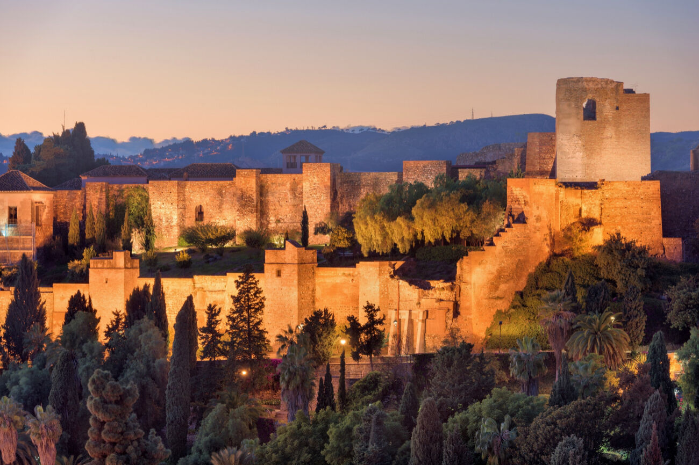
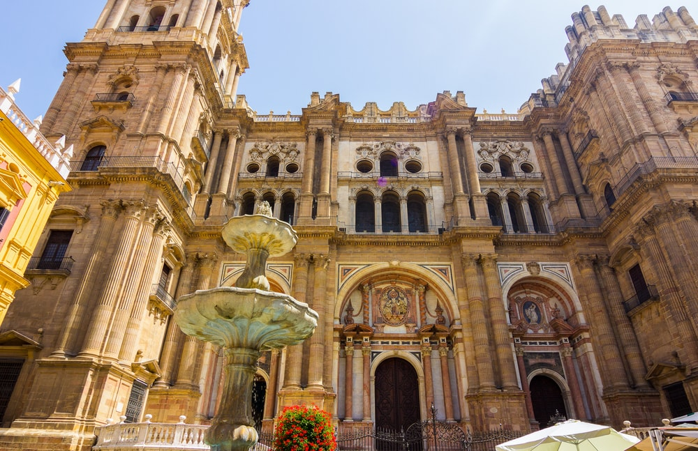
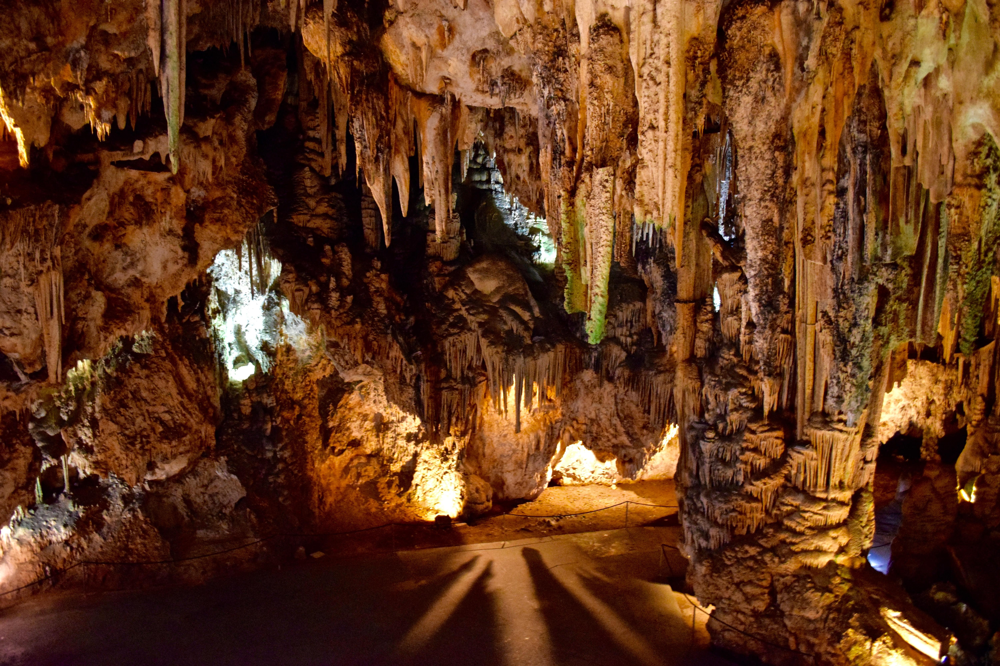
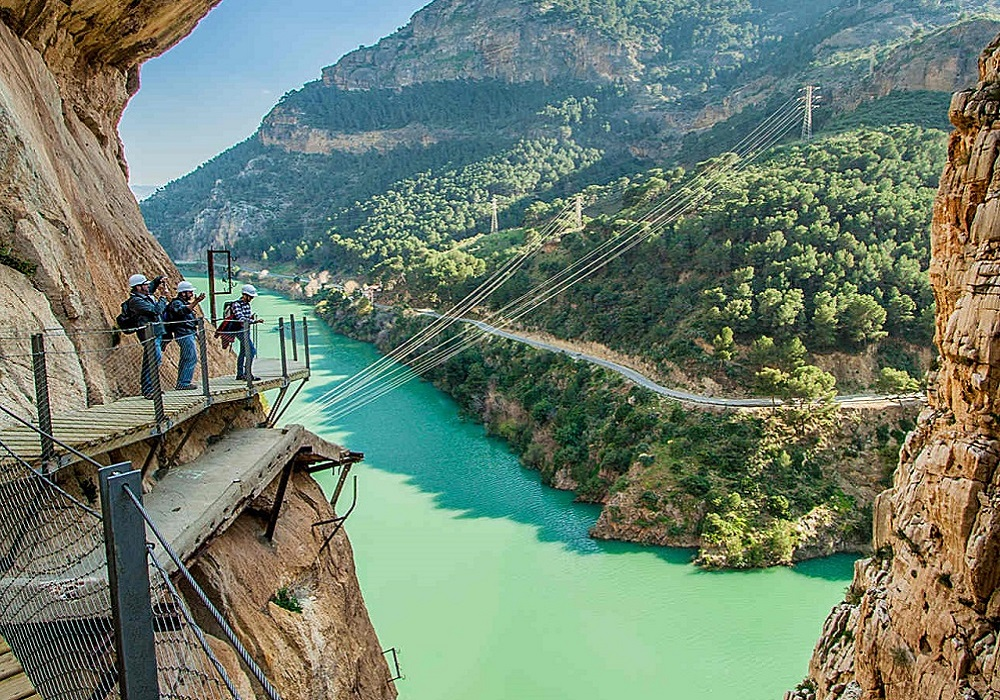
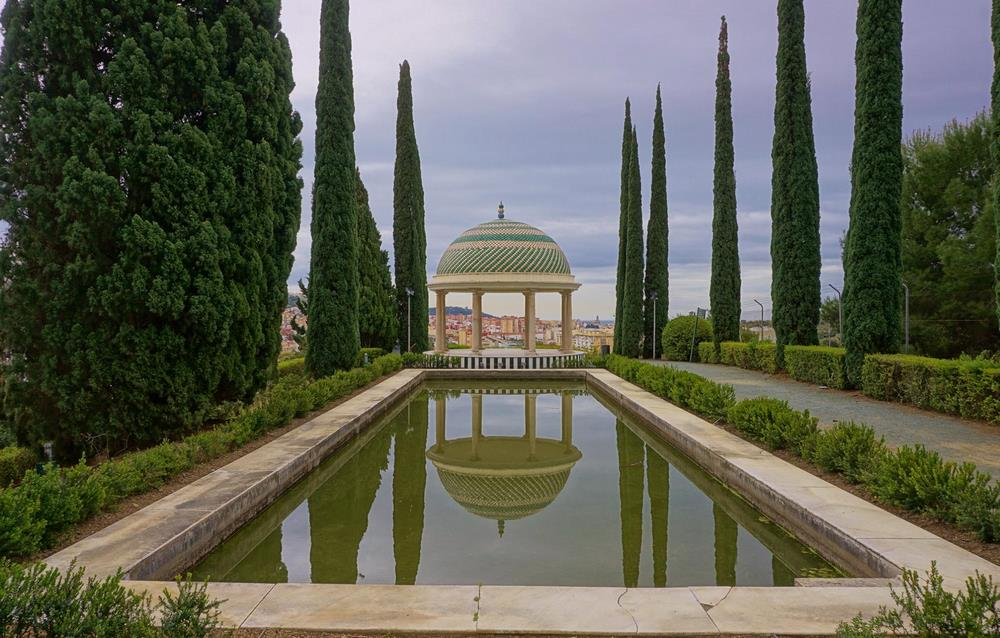
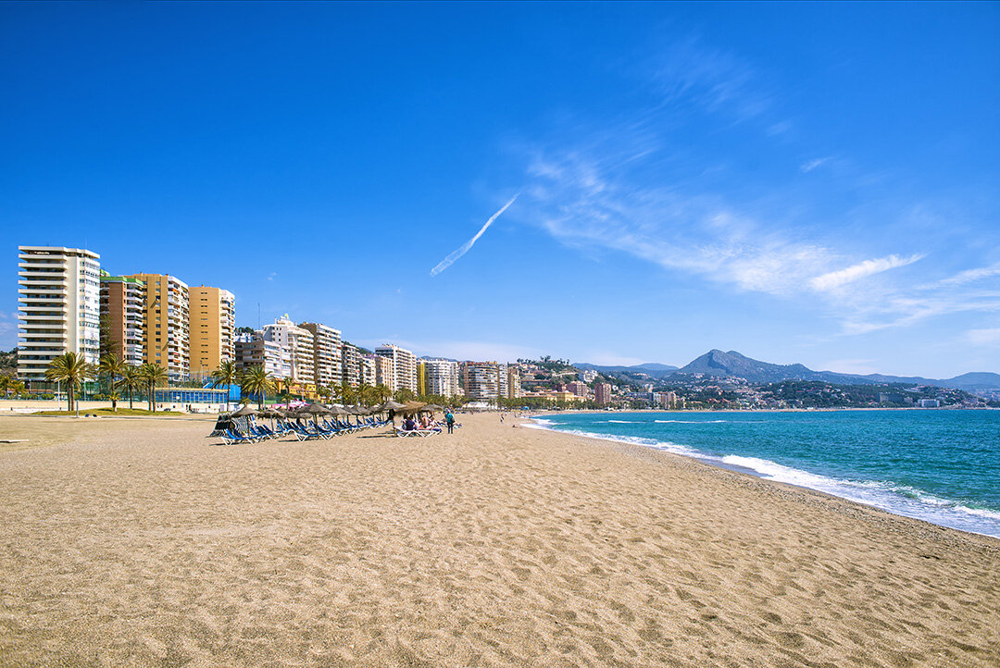
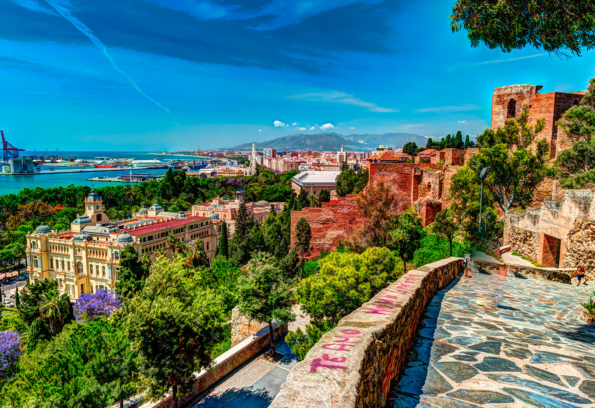
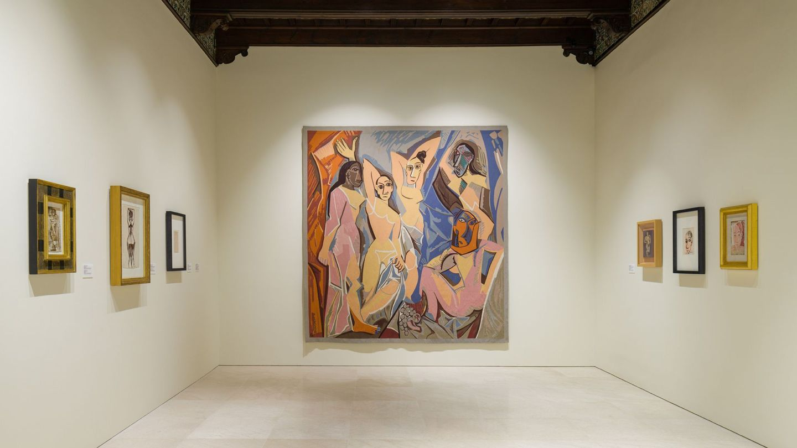
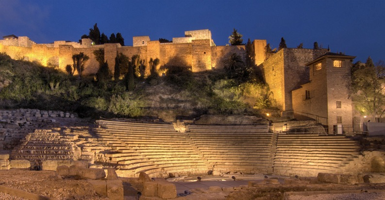

Lugares Destacados
La Alcazaba
La Alcazaba es una fortaleza histórica de la época musulmana con vistas impresionantes de la ciudad y el mar. Su arquitectura es un ejemplo de la influencia árabe en la región.
Direccion:Calle Alcazabilla, 2, 29016, Málaga
Catedral de Málaga
La Catedral de Málaga, conocida como "La Manquita" debido a la falta de una de sus torres, es un importante símbolo de la ciudad y una de las iglesias más grandes de España.
Direccion:Calle Molina Lario, 9, 29015, Malaga (Málaga)
Cuevas de Nerja
Las Cuevas de Nerja son una de las formaciones geológicas más impresionantes de España, conocidas por sus enormes estalactitas y estalagmitas. Están situadas en la costa de Málaga.
Direccion:Carretera de Maro, s/n, 29787, Nerja (Málaga) ·
Caminito del Rey
El Caminito del Rey es un sendero espectacular en un desfiladero, famoso por su impresionante paisaje y su historia como una de las rutas más peligrosas del mundo.
Direccion:Ardales,Malaga
Jardín Botánico La Concepción
Este jardín botánico es un espacio verde donde se pueden encontrar más de 2,000 especies de plantas, y es conocido por su gran belleza y su entorno natural.
Direccion:Camino del Jardín Botánico, 3, 29014, Málaga
Playa La Malagueta
Una de la playas mas bonitas para poder disfrutar en el verano con tu familia
Direccion:2 Calle Pintor Guerrero del Castillo, 29016, Málaga
Castillo de Gibralfaro
El Castillo de Gibralfaro es una fortaleza construida en el siglo XIV para proteger la Alcazaba y sus tropas. Es uno de los atractivos turísticos de Málaga y ofrece vistas panorámicas impresionantes de la ciudad desde sus murallas. Los visitantes pueden explorar el Castillo o adentrarse en el Centro de Interpretación para descubrir su historia
Direccion:Camino de Gibralfaro, 11, 29016, Málaga (Andalucía)
Museo Picasso
El Museo Picasso Málaga es un lugar icónico en la ciudad, en el Palacio de Buenavista, con más de 200 obras de la colección privada de familiares del artista, exposiciones temporales y actividades educativas y culturales relacionadas con Picasso. Ideal para los amantes del arte y la cultura que quieran conocer más sobre la vida y obra de este famoso artista español
Direccion:Calle San Agustín (Palacio Buenavista) 8, 29015, Málaga (Andalucía)
Teatro Romano
El Teatro Romano de Málaga, construido en el siglo I a.C., es uno de los vestigios más significativos de la época romana en la ciudad. Está situado al pie de la famosa Alcazaba y ha sido testigo de la rica historia de Málaga. Es un ejemplo destacado de la arquitectura romana y estuvo en uso durante varios siglos para representaciones teatrales y eventos culturales
Direccion:Calle Santiago, 8, 29015, Málaga (Andalucía)
Horario de Visitas y Precios
| Lugar | Horario | Precio |
|---|---|---|
| La Alcazaba | 10:00 - 20:00 | 3.50 euros |
| Catedral de Málaga | 10:00 - 18:00 | 6 euros |
| Cuevas de Nerja | 10:00 - 19:00 | 13 euros |
| Caminito del Rey | 09:00 - 16:00 | 10 euros |
| Jardín Botánico La Concepción | 09:00 - 18:00 | 5.20 euros |
| Castillo de Gibralfaro | Invierno 09:00 - 18:00 Verano 09:00 - 20:00 | 3.50 euros |
| Museo Picasso | Invierno 10:00 - 19:00 Verano 09:00 - 20:00 | 4 euros |
| Teatro Romano | 10:00 - 18:00 domingo y festivos 10:00 - 16:00 | gratis |